음악 워크숍
전공별 1:1 실기 레슨에 마스터클래스와 작곡가 특강을 더하고, 마지막 날 연주회로 배운 것을 무대에서 선보입니다.
이렇게 배웁니다
개인 지도에서 마스터클래스,
무대까지 한 걸음씩
- 01
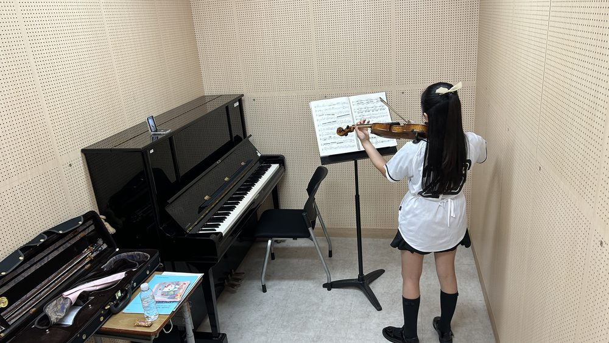
전공별 1:1 레슨
전공 교강사가 개인 레퍼토리를 깊이 지도합니다.
- 02
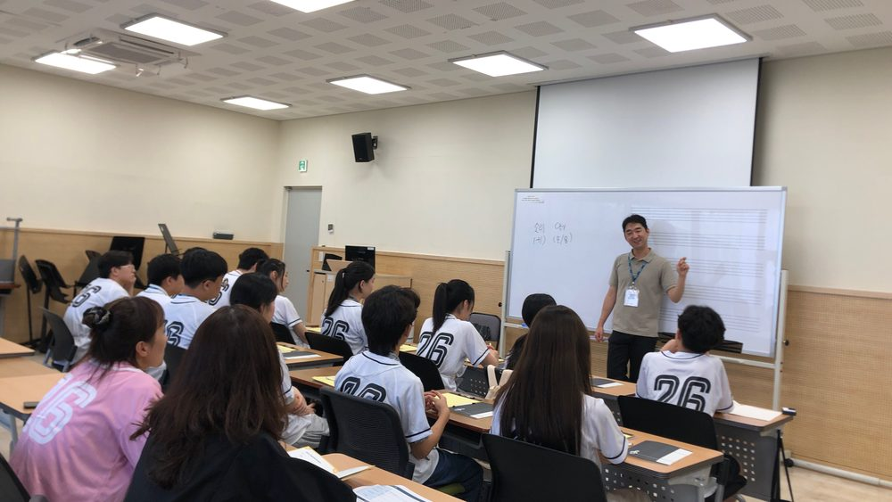
마스터클래스 · 특강
국내 및 해외 저명 연주자들의 음악적 경험을 직접 배우며 시야를 넓힙니다.
- 03
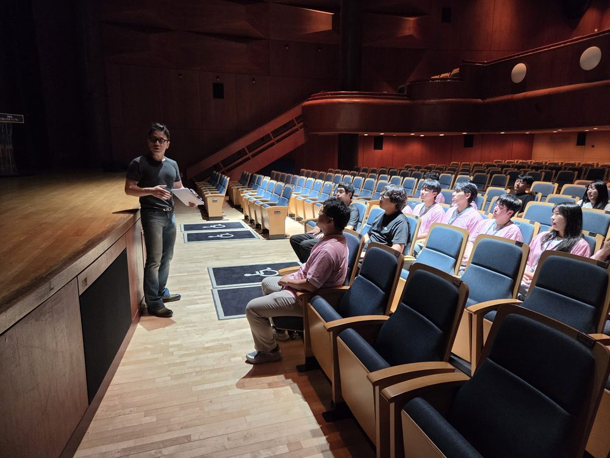
연주회
무대 연주를 통해 표현하고 소통하는 방법을 배웁니다.
교육 포인트
레슨에서 무대로,
연주자에서 음악가로.
- 기초
진단 및 기본기 강화
전공 기초, scale test 등을 통해 연주자로서의 기본기를 다집니다.
- 심화
전문성 심화
심화 전공 레슨, 마스터클래스와 작곡가 특강으로 레퍼토리를 깊이 다룹니다.
- 무대
무대 경험
관객과 소통하며 음악가로서의 정체성을 키웁니다.
무용 워크숍
해외 발레단 현역 무용수에게 직접 배우는 발레 클라스와 레퍼토리 수업. 클래식 작품부터 캐릭터 댄스와 히스토리컬 댄스. 그리고 분야별 전문가 특강을 통해 발레의 기본기부터 예술적 해석력과 표현 역량까지 심화하는 3일간의 집중 워크숍.
이렇게 배웁니다
매일의 클라스가
하나의 작품이 되기까지
- 01
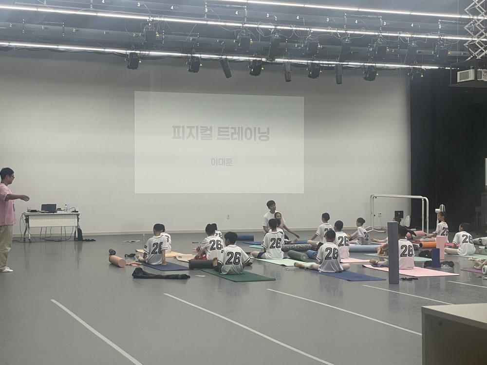
발레 클라스
발레 기본 자세 및 신체 정렬, 테크닉 강화
- 02
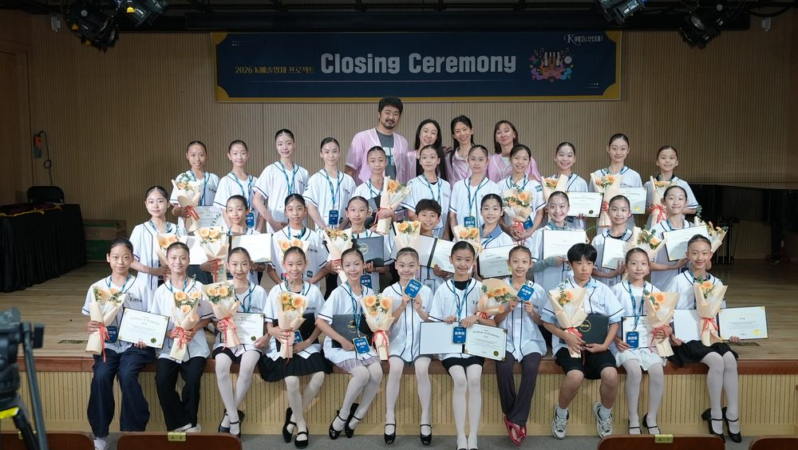
발레 레퍼토리
다양한 발레 작품을 접하며 작품 해석력 및 표현 역량 심화
- 03
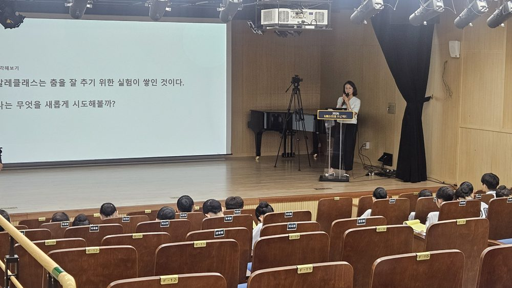
발레 클라스의 역사
이론 특강을 통한 발레 클라스의 시작과 발전 과정에 대한 시대별 이해
- 04
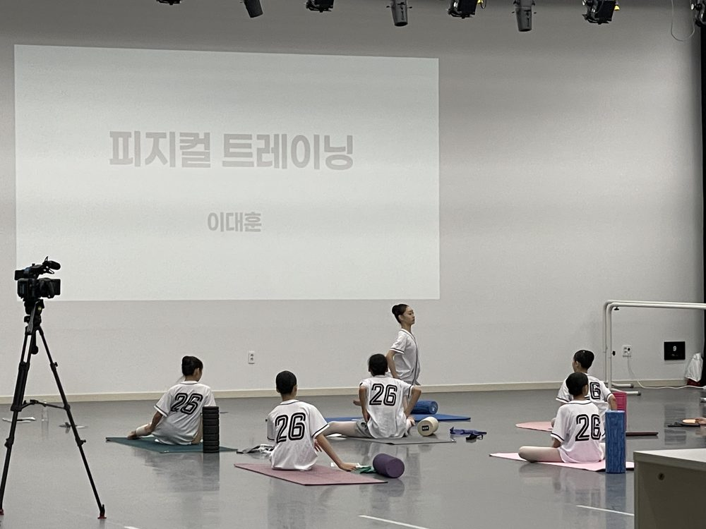
피지컬 트레이닝
근육 사용법 및 움직임 습관 점검, 효율적인 신체 사용법 학습
교육 포인트
기본기는 정확하게,
표현은 자신만의 언어로.
- 맞춤 지도
기초역량 강화
학생 역량에 따른 맞춤형 지도로 발레 기본기와 무대 수행 능력을 강화합니다.
- 레퍼토리
예술적 표현 심화
다양한 발레 작품 경험을 통해 예술적 해석력과 표현 역량을 심화합니다.
전통예술 워크숍
전통예술 워크숍은 가야금·거문고·해금·타악·판소리·연희 등 6개 전공을 중심으로 운영됩니다. 전공별 집중교육과 다양한 예술적 경험을 통해 기량을 심화하고 새로운 표현의 가능성을 탐색합니다.
이렇게 배웁니다
물려받은 소리를 익히고,
나의 소리를 찾기까지
- 01
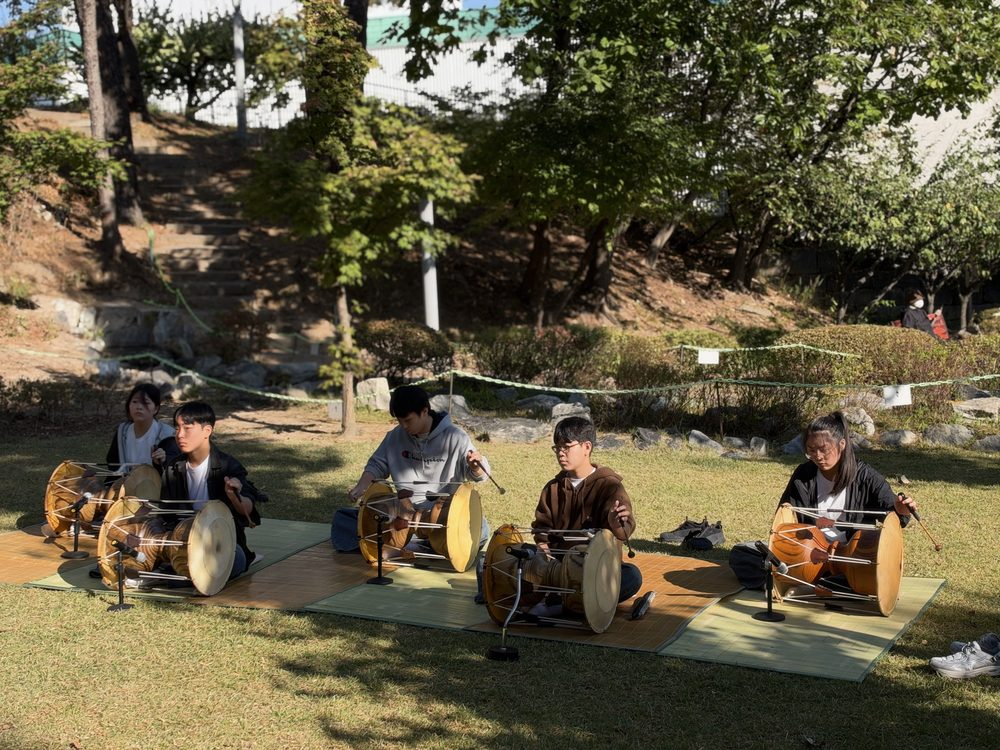
전공 실기
전공별 특성을 반영한 맞춤형 실기 지도
- 02
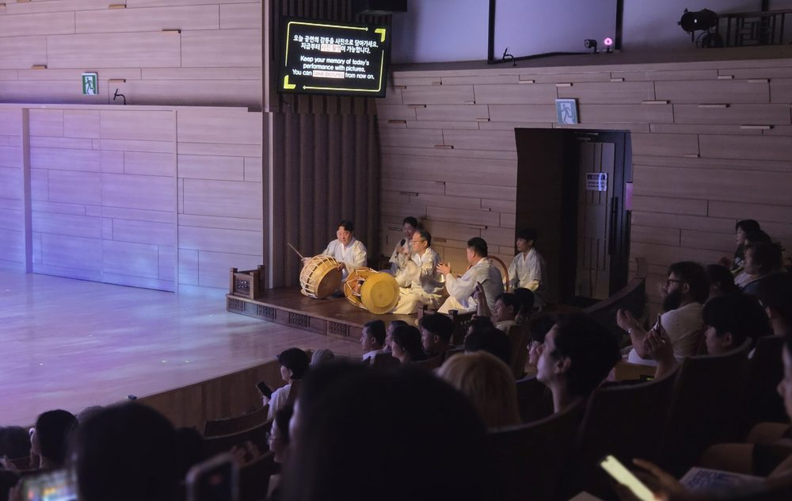
전공 심화
개인·소그룹·단체수업을 통한 기량 및 음악적 표현력 심화
- 03
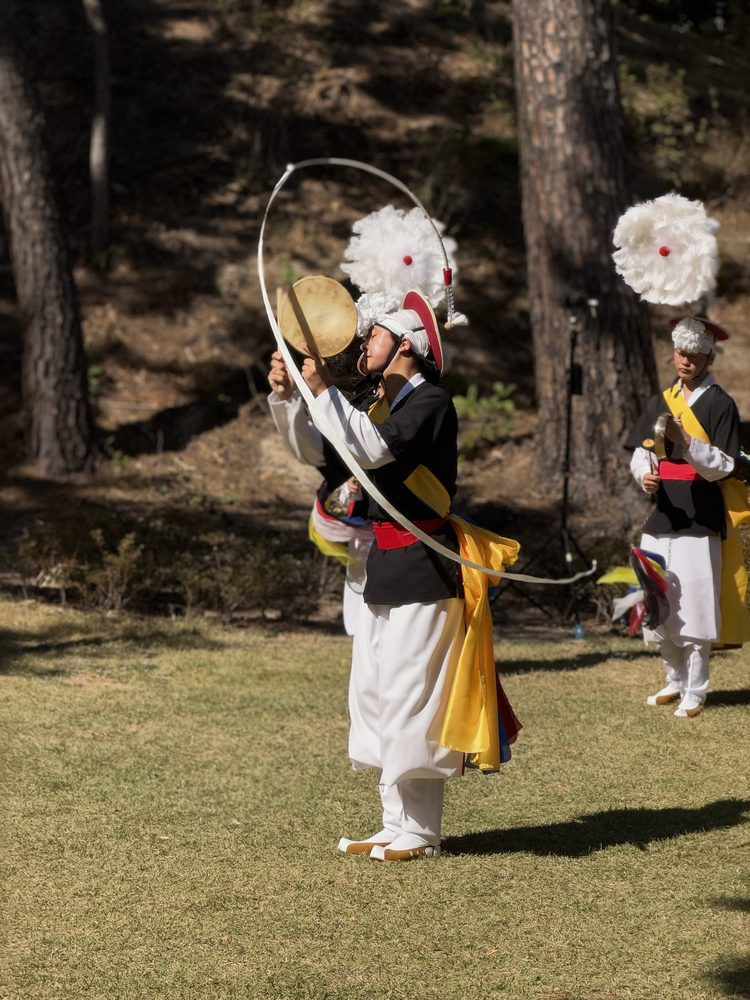
신체·음악 표현
자신의 신체와 음악적 표현 방식 탐색
- 04
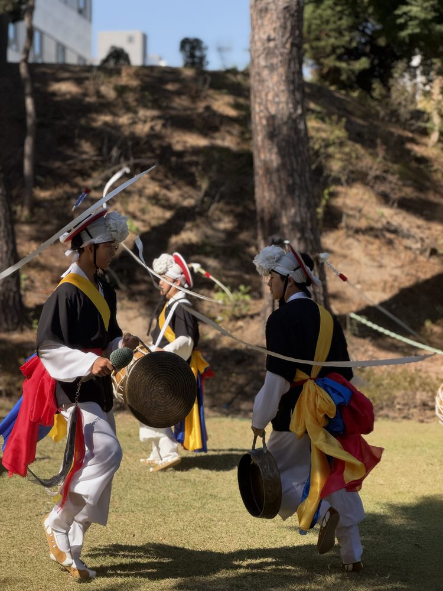
소리 탐색 및 창작
전통악기와 다양한 소리의 탐색·구성·창작
- 05
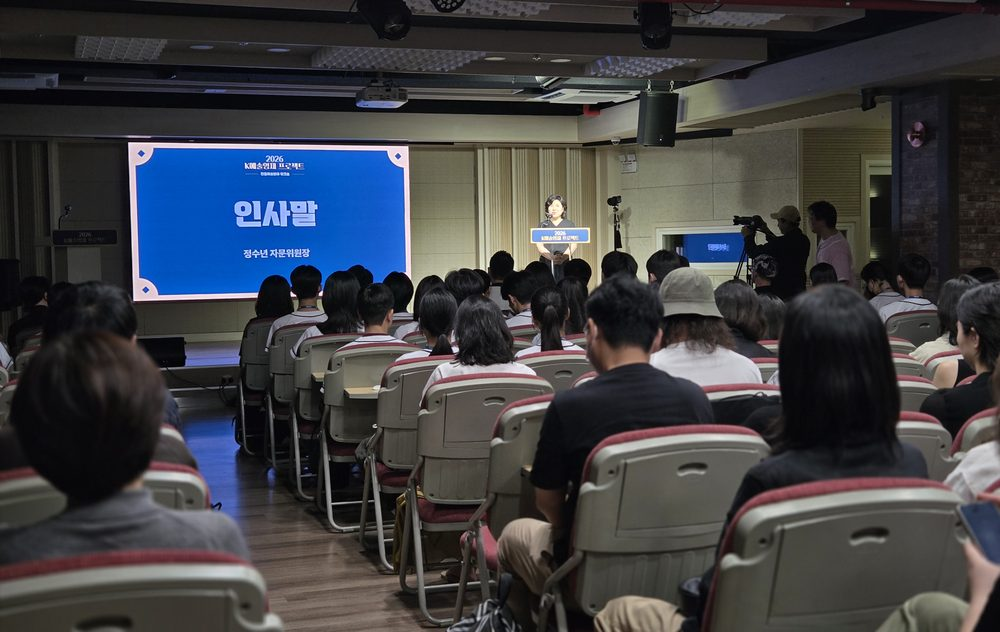
현장 체험
공연 관람 등 현장 경험을 통한 전통예술 이해 확대
교육 포인트
깊게 배우고, 넓게 듣고,
새롭게 표현한다.
- 심화
전공의 심화
전공별 맞춤형 교육을 통해 기량과 표현력을 발전시킵니다.
- 경험
탐색과 성찰
다양한 예술적 경험을 통해 자신의 음악과 표현 방식을 돌아봅니다.
- 창작
표현의 확장
새로운 시도와 예술적 교류를 통해 창의적인 표현 가능성을 넓힙니다.
미술 워크숍
다양한 관찰과 탐구 활동을 바탕으로 자신만의 아이디어를 발전시키고, 여러 표현 방식과 창작 방법을 경험하며 작품을 제작하는 미술 워크숍입니다. 전문가의 강연과 실습, 교강사진의 피드백을 통해 창작의 가능성을 확장하고, 작품 발표와 전시를 통해 창작 성과를 공유합니다.
이렇게 배웁니다
바라보는 일에서 시작해
전시장의 한 벽이 되기까지
- 01
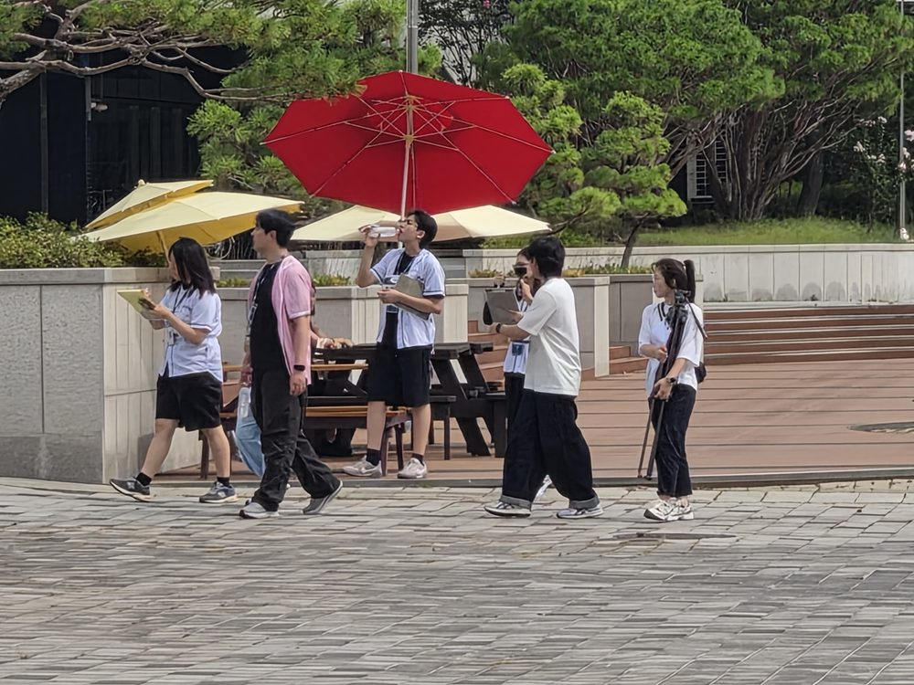
관찰과 탐구
다양한 주제와 대상을 관찰하고 창작의 소재 탐색
- 02
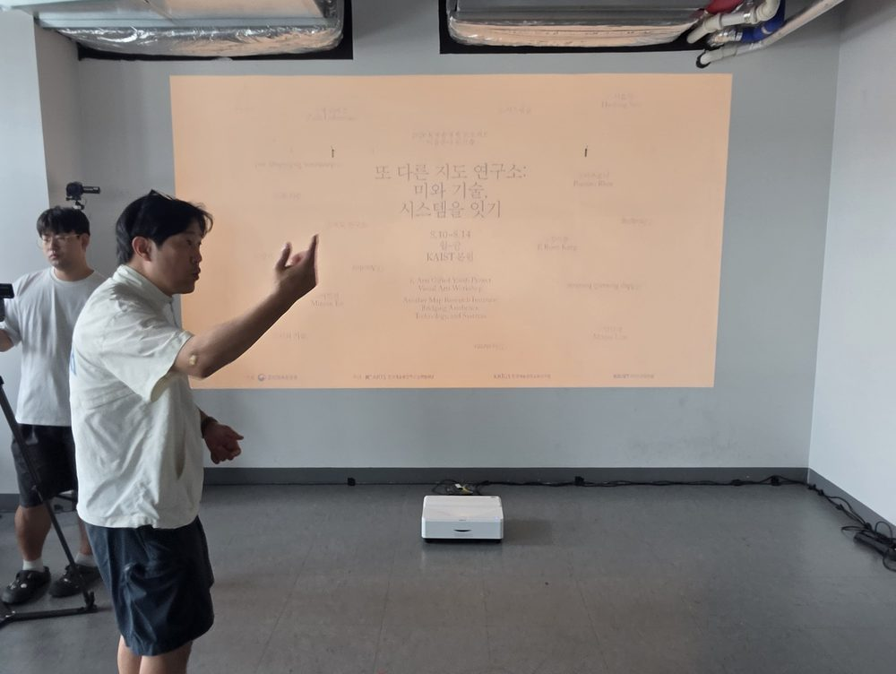
예술가 특강 및 창작 실습
전문가 특강과 실습을 통한 다양한 창작 방법 탐색
- 03
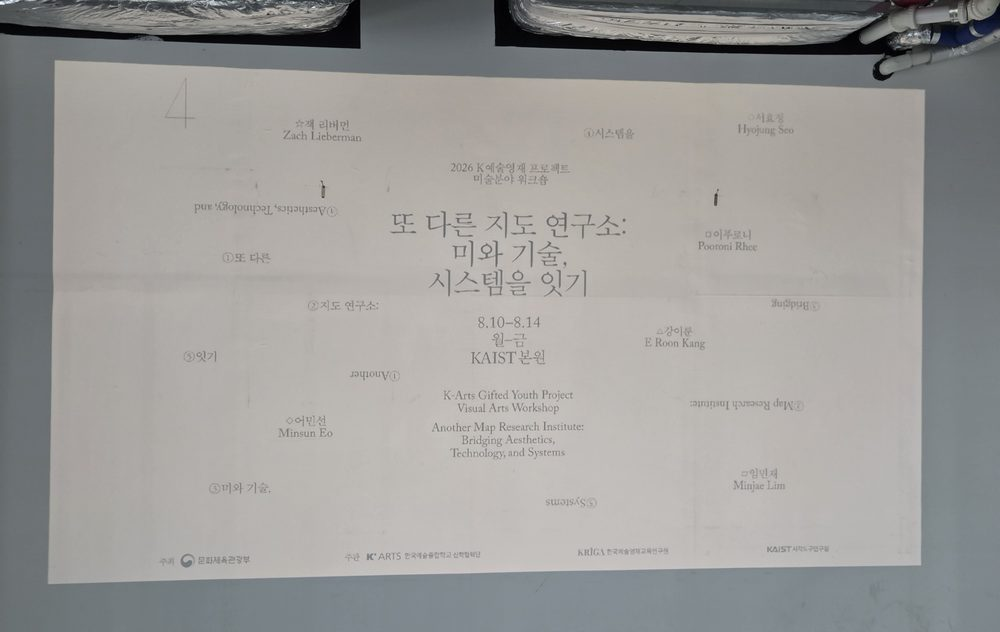
주제 탐색 및 작품 구상
개인별 창작 주제 발굴, 작품 구상 및 피드백
- 04
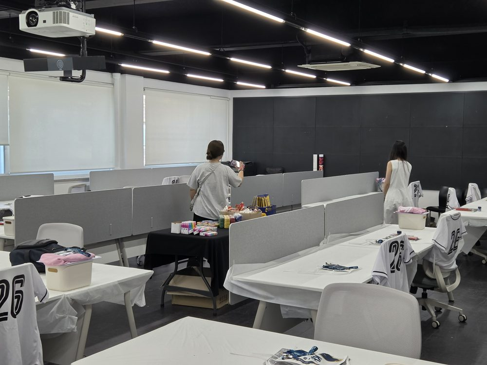
개별 작품 제작
다양한 매체와 표현 방식을 활용한 작품 제작
- 05
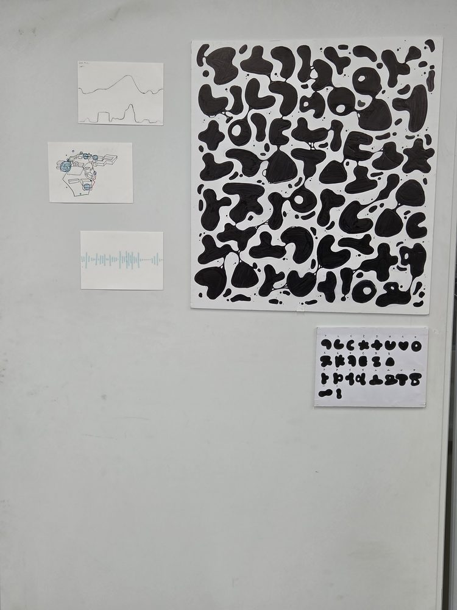
작품 발표 및 공유
작품 발표 및 전시 등을 통한 창작 결과물 공유
교육 포인트
나만의 질문이
나만의 작품이 되도록.
- 특강
창작 방식의 확장
다양한 주제와 창작 방법론을 탐색하며 새로운 표현 방식을 경험합니다.
- 피드백
전문가 피드백
작품 구상과 제작 과정에서 교강사진의 피드백을 통해 아이디어를 발전시킵니다.
- 전시
창작 성과 공유
개별 작품 발표와 전시를 통해 창작 결과물을 공유합니다.